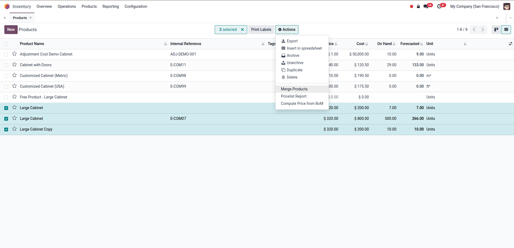
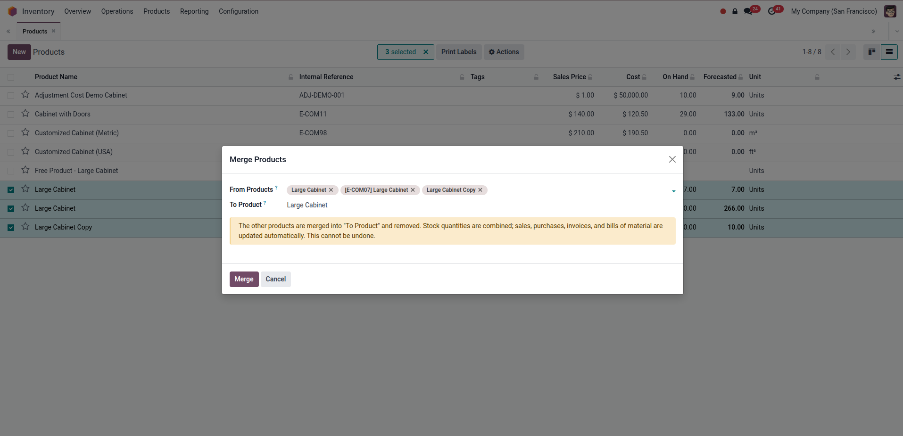
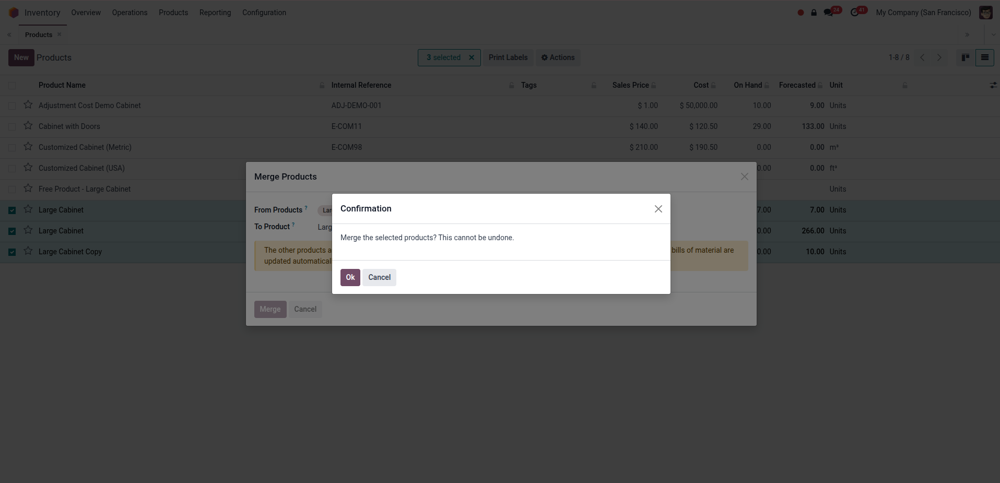
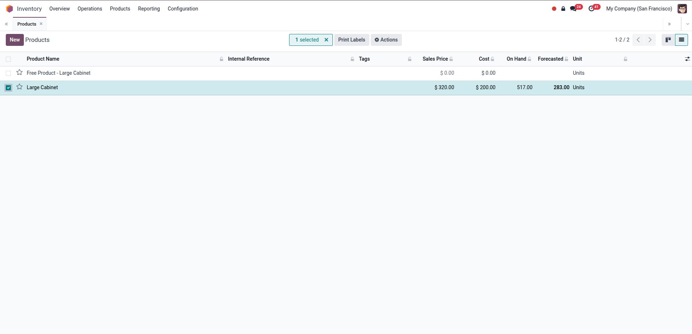
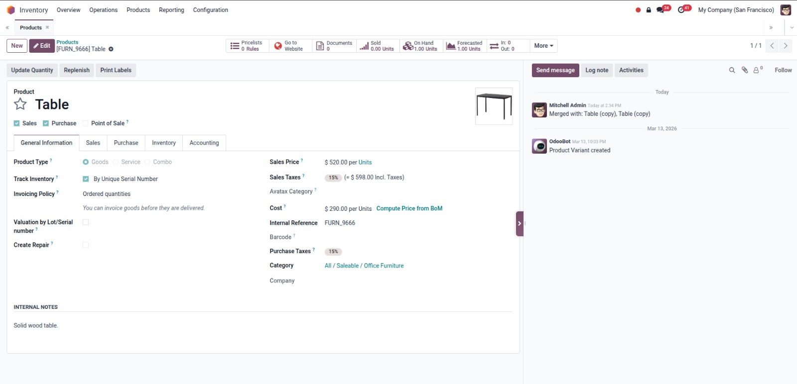
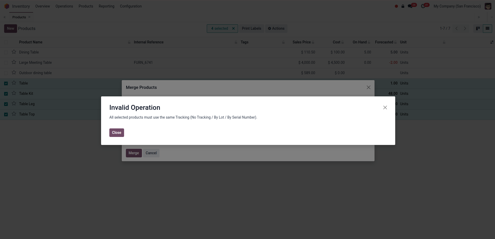
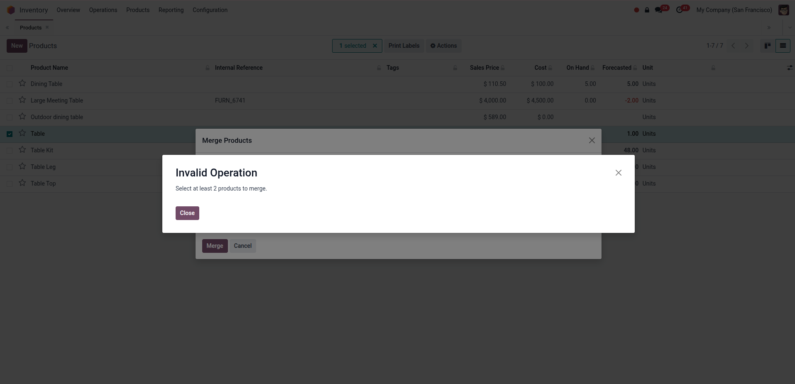

Select the duplicates in Products or Product Variants, then Actions > Merge Products. No separate screen to configure.
On-hand quantities are added onto the kept product per location, lot, package, and owner using Odoo's own stock engine.
Sales, purchases, invoices, BOMs, and stock moves that pointed at a duplicate are reassigned to the kept product automatically.
The oldest record - almost always the original product - is preselected as the one to keep. You can change it anytime.
Merging products with different types or tracking modes (lot/serial) is blocked, and every merge asks for confirmation first.
The kept product's chatter records exactly which duplicates were merged into it, by whom, and when.

Merge Products"/>Three "Large Cabinet" records with separate stock (7, 500, 10). Tick them and choose Merge Products straight from the Actions menu.

All selected duplicates land in From Products, and the oldest record is preselected as the product to keep.

A final confirmation reminds you the merge cannot be undone before anything is touched.

After the merge, a single Large Cabinet remains with 517 on hand - 500 + 7 + 10, nothing lost.

The kept product logs "Merged with: ..." with user and timestamp, so the cleanup is always traceable.

Serial-tracked and untracked products cannot be merged together - lot and serial data stays consistent.

Selecting fewer than two products shows a friendly error instead of doing nothing - no guessing.